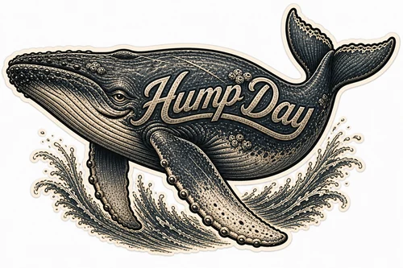

Unfinished cedar-weave hat experiment
Working study · not finished
I make art, books, songs, furniture, upholstery, websites, and whatever else refuses to stay trapped in my head.
What’s on my workbenchI live and create in Ketchikan, Alaska. I’m Tlingit and Haida, Teiḵwèidi (Brown Bear) of Sàanyàa Ḵwáan. Family, Northwest Coast formline, boats, cedar, music, humor, and lived experience all find their way into the work.
Studio LaDuke is the roof over the whole pile. It’s where the artwork, stories, experiments, and stupid jokes get to live together. Some projects are polished. Some are held together by epoxy, curiosity, and unreasonable confidence.
I believe broken doesn’t mean finished. A life, an object, or an idea can carry the marks of what happened and still become something worth keeping.
Northwest Coast art and contemporary illustration, alongside experiments in color and texture.
Open the galleryEverybody Deserves to Go Home is my book about finding a way back. I’m also writing songs and making worlds you can step inside.
Find the writing Visit the Music RoomPaddles, furniture, upholstery, and prototypes. If I can pull something apart, I usually want to see what else it could be.
Visit the WorkshopAn idea I haven't finished yet
A loose sheet of clear vinyl is protecting a cedar-weave study that still needs figuring out. Lift it to look underneath.
The unfinished study is covered.
Real work, unfinished on purpose. The pinned photographs are Corey’s carved paddle, hand-drawn boat study, and carved paddle earrings. The cedar weave remains an experiment.

Hump Day Feel the Burn
Feel the Burn
I’m not waiting until I have everything figured out. Apparently, that would take forever.
For a second opinion, ask Bob